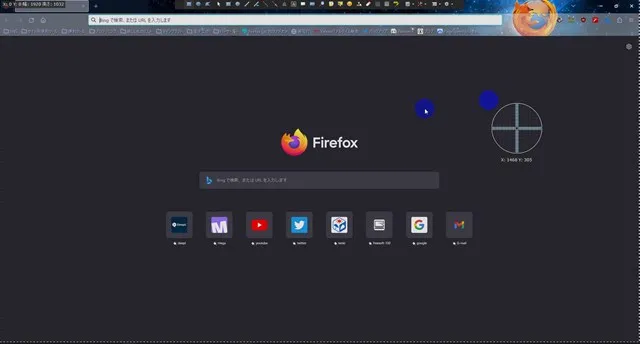
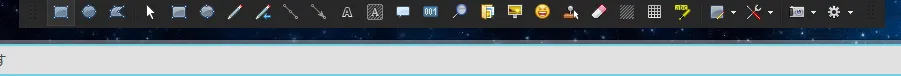
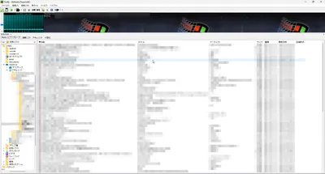
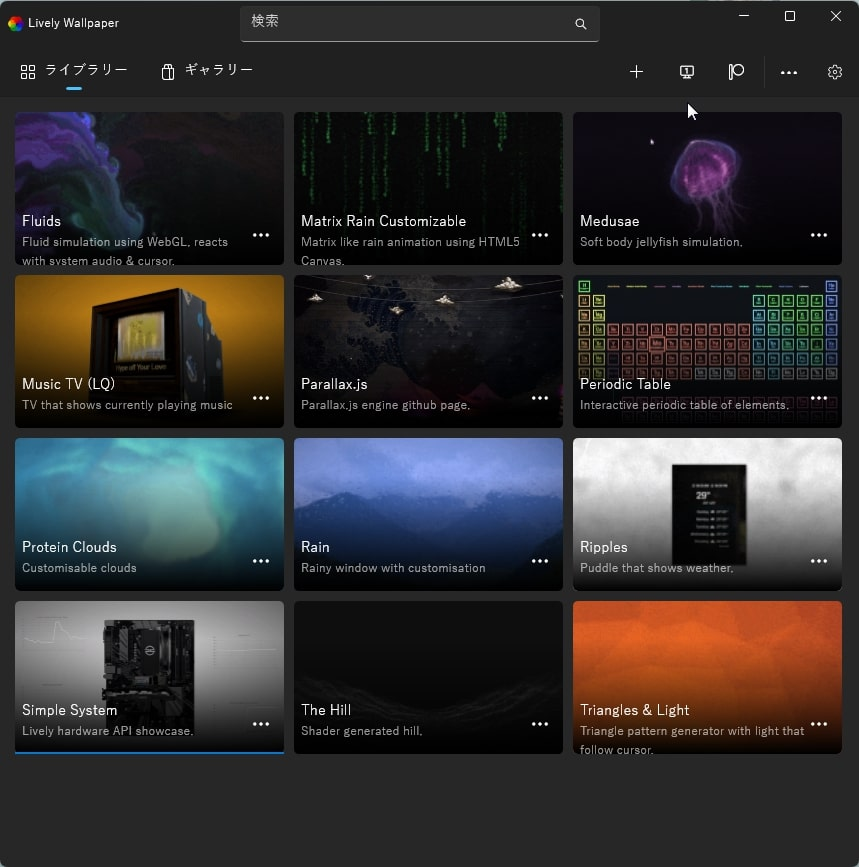
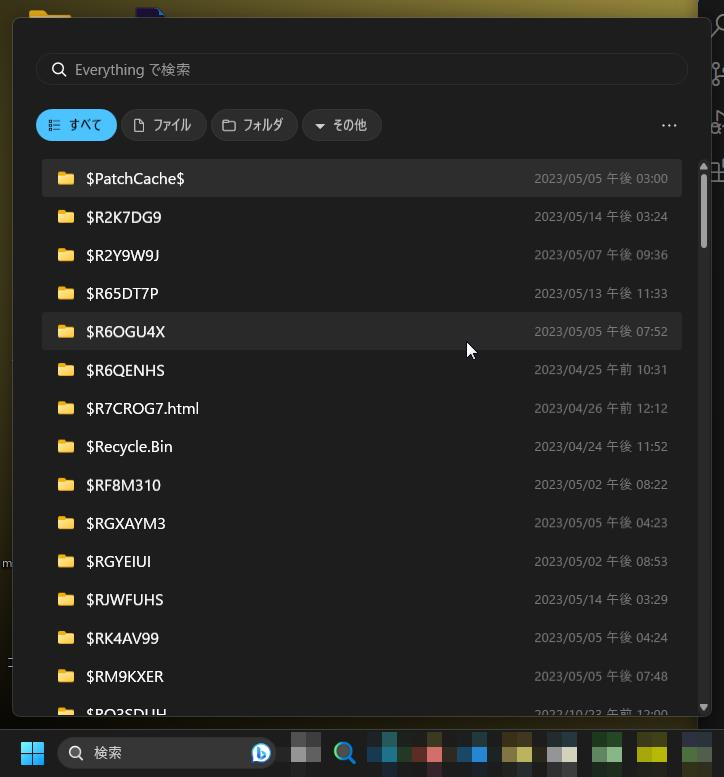
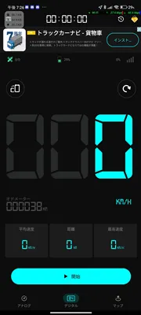
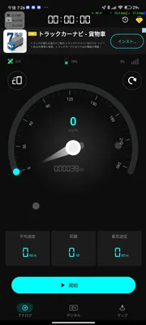
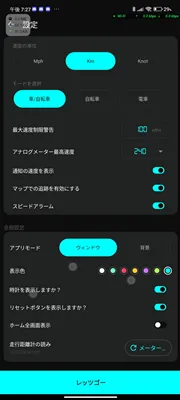
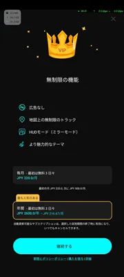

ふりさんのソフト紹介部屋
今日は
時間は
ここではPCやスマホの便利アプリを紹介するサイトです。
このサイトの違うところは、本当に便利なもの、要は何個もあるわけではなく、この分野では、めっちゃ便利！
ってやつを紹介するサイトです
注意
-----------------------------------------------------------------------------------------------------------------
このサイトは暇な時や面白いソフトを見つけた時に更新されます。
このダウンロード先はセキュリティ向上のため、URLチェックの上張っております。
フリーソフトですので、有料ソフト当は紹介は致しません。
連絡先
Twitter:@freedomhuri
discord"MZMKZK#3330"
新連絡先discordは[hurisan_2006]までフレンド追加お願いします。
discord "discordが仕様変更後変更します。"
-----------------------------------------------------------------------------------------------------------------
お読みいただいたうえでご使用ください。
ここから紹介になります
PC用ソフト
青文字（名前）を押すと紹介されるところまでジャンプします。
[スクリーンショットソフト]
[音楽プレイヤー]
[背景画像変更ソフト]
[ファイル検索ソフト]
スマホ用アプリ
[スピードメーター]
多機能で使い勝手のいい!shareX
みなさんは多くのスクリーンショットアプリの中で何をお使いですか？
私はshareXというものを使っています！
shareXはものすごく使い勝手がいいのです
「そんなのいっぱいあるじゃないか！」といったらおしまいなのですが
そんなshareXをご紹介します！
shareXとは？
shareXの編集画面を見てもらえればわかります！
全画面

編集画面

どうですか？
結構よさそうでしょ？
ちなみに背景はファイアーフォックスのURLの部分ですねｗ
このソフトは
画像の大きさ切り取り
文字入れ
マーカーペン
画像入れ
モザイク加工
矢印入れ
このように、多くのソフトで入れられるものはあり、
結構使いやすいソフトですねｗ
個人的にスクリーンショットソフトはこれにはまって抜け出せませんｗ
ダウンロード・詳細はここから！
高性能音楽プレイヤー・Kb Media player
音楽プレイヤーといっても、まあまあ種類あるじゃないですか、
ぶっちゃけどれ選べばわからなくないですか？どのソフトも高性能でよかったのですが
私はkb media player 結構違って気に入ってますｗ
何が違うかというと、操作性がかなりわかりやすいです
言いたいことは、使えばわかります。
そんな音楽プレイヤーの画像はこれ
「全体」

「ツールバー」

このソフトは二番目の画像で、倍速や低速・一時停止・停止・ファイルを開く・音量メータ
など、いろいろできてコンパクトに収まっています
この画像は全画面でスクリーンショットしましたが
縮小して使うこともできますし、もっとコンパクトにすることも可能ですし、
最小化も可能で、機能がたくさんあり、直感的に操作できるのは結構気にいりましたｗ
そんな音楽プレイヤーのダウンロード・詳細はここから
Lively Wallpaper
動く背景を使いたい場合はこれ！
ほかにも、steamの背景変更ソフトは安いですが、お金がかかります
このソフトはyoutubeなどのサービスやmp4などの動画、動く背景にできるソフトです！

そんなソフトの詳細・ダウンロードはここから！
高速ファイル検索ソフトEverything
みなさんは、ファイルなくしたことあります？ファイルをなくすといえば、「あれ？さっきの写真どこに保存されたんだ？」
とか、.exeはどこにあるんだ、とか、なにかしらファイルを探すときに重宝するのが、Everything
普通のファイルソフトでも検索機能はついていますが、結構遅いです（ホントに）
ですが、ソフトを使うことで、1発で見つけることができます！
そこまで重くないので、念のため入れておくのもありだと思います！
是非入れてみては？
全体

そんなソフトの詳細・ダウンロードはここから！
ツールバーに固定！？Everythingツールバー
Everythingが二つ？と思ったと思うのですが、普通のEverythingは最小化されてるので、
少しだけ手間がかかるといっても２クリックですがｗ
ですが、ツールバーに止めておけて、見やすいのはどうでしょうか？
ソフトがいいのかツールバーがいいのかは結構個人的に別れると思いますね
こっちも見てくれたなら少しみてみませんか？
全体

詳細はこちら
スマホ用アプリ
ここからはスマホ版のアプリ紹介になります。
※PC版と同じアプリの場合「***」というマークがつきます。
結構正確？GPSスピードメーター
スピードメーターというと、バイクや車についてると思いますが、それがスマホでスピード表示できます
自転車にはスピードメータがないので、このGPSスピードメーターを使ってます
個人的にこのスピードメーターアプリはまあまあ正確だと思います
ただし、1km/hなどとても、遅く進むと精度が落ちる気がしますが、そこまで気になるほどじゃないですね
自転車に限らず、スピードメーターが変な時など、結構使えると思います。
是非自転車がメインな方は入れてみてください！
メイン画面

メイン画面2

設定画面

VIP画面（機能内容）

ダウンロード先※androidのみ